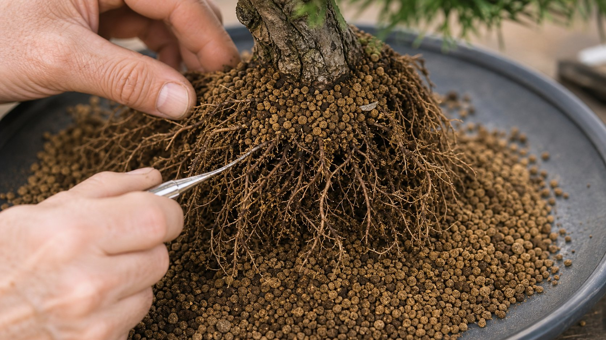

Der Boden entscheidet: Akadama & Wurzeln.

Ein Baum steht nicht nur auf dem Boden. Er lebt aus ihm. Wie bei einem Haus entscheidet das Fundament, ob die sichtbare Form stabil bleibt. Bei japanischen Ahornen, Garten-Bonsai und Niwaki beginnt Gesundheit deshalb unter der Erde: bei Struktur, Wasserführung, Luft und Säure.
Die einfache Formel
Wurzeln brauchen Wasser und Luft. Zu trocken ist Stress. Zu nass ist ebenfalls Stress. Zu verdichtet bedeutet: wenig Sauerstoff, schwache Feinwurzeln, schlechte Reaktion in der Krone.
Akadama, Kanuma und Pemza sind nicht einfach schöne Namen aus Japan. Sie helfen, Wasser und Luft so zu führen, dass die Wurzeln arbeiten können. Für viele japanische Ahorne ist ein leicht saurer Bereich von etwa pH 5,5-6,5 sinnvoll. Ist der Boden zu schwer, zu nass oder zu verdichtet, steigen Stress, Moosdruck und Pilzrisiko.
Warum ein Kronenproblem oft im Boden beginnt.
Wenn ein Baum Nadeln verliert, innen trocken wird oder nach dem Schnitt nicht sauber reagiert, reicht der Blick auf die Krone nicht. Standort, Substrat, Wasser und Pflege gehören zur Diagnose. Ein Schnitt kann viel korrigieren, aber er ersetzt kein gesundes Fundament.
Darum fragt Viktor nicht nur: Welche Form wünschen Sie? Er fragt: Wie steht der Baum? Wie fliesst Wasser ab? Wo ist Schatten? Wie wurde vorher geschnitten? Erst dann ist eine ehrliche Empfehlung möglich.